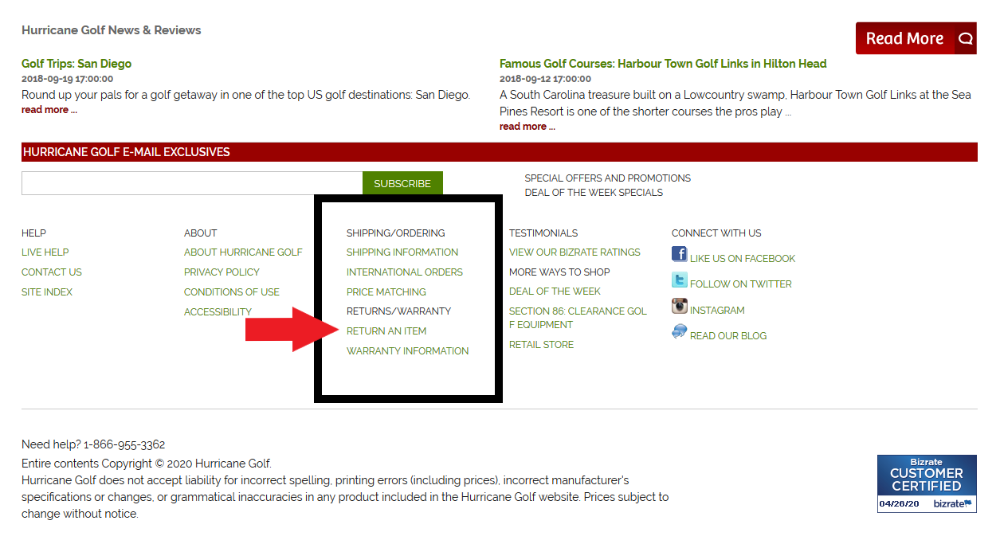

This week, we will be reviewing the findings from user tests of the website hurricanegolf.com, an online discount golf supply business.
The script used for these user tests can be found here
In this test, we will ask the user the following
- Home Page impressions: specifically what is the user able to determine about the business from the home page
- To learn about the company's return policy, asked ot assess a specific type of return
- To learn how to track an order
- To find a specific product
A quick overview of the users being tested. All three are familiar with golf, have knowledge of the terminology and have shopped online in for products before, however have not shopped for golf products online in the past. All are regular computer users both at work and at home.
Task 1: Home Page Assessment
Upon viewing the home page, users were able to determine that this business sells golf equipment online, and associated it with being a "discount" seller. One user determined that hurricane golf also offers golf travel packages, which is less prominently displayed. For reference, the home page is pictured below.
One user correctly identified the function of the business, but later wondered if the company was a golf shoe/apparel company based on the most prominent ads and brands being shoe related, but concluded it was indeed selling all golf supplies.
Based on this user testing, Hurricanegolf.com's home page effectively communicates the business's market and niche, however some product offerings are not immediately obvious.
Task 2: Return Policy
Users were asked to use the website to determine if a fictitious order from hurricanegolf.com could be returned given the conditions. This information is located in the footer of the home page, pictured below:
All users were able to locate this information eventually, however two users' initial instict was to call phone numbers listed on the home page which were designed to provide customer support during the COVID-19 shutdown. This was confusing to users because the phone number is prominently listed top-center of the page with text inciting the user to call with questions.
All users initially attempted to click menu headings instead of the links below them, indicating insufficient style distinction between headings and clickable links. Referencing the above picture, it can be seen that headings and listings are not separated.
In all cases, users found the information within 3 minutes, however all users also attempted to click non-clickable menu headings prior to selecting the right page. The testing suggests this is an area for improvement, perhaps created better visual separation between the footer categories and more clearly distinguishing clickable links from headings.
Task 3: Track an order
For this task, users were asked to learn how to track an order. Information on how to do this is found once again in the footer under the "shipping information" link. As with the returns question, two users attempted to interact with unclickable menu headings before selecting the correct link. A third user did not locate this information, but rather went through the "my account" section of the site, which displays this:.
Seeing that "tracking information" is listed below "create an account" the user believed that you could not track an order without creating an account.
Generally speaking, users were able to find out how to track an order, and in real life the user would have recieved an email with tracking information, however these emails cannot be relied upon as they are often filtered out as spam. Hurricanegolf.com does not prominently display "track an order" as many other e-commerce sites do and while 2 out of 3 users successfully identified that a tracking email would have been sent to them, one did not. A recommendation for improvement would be the ability to enter an order number and recieve tracking through the web and not solely relying on a UPS tracking email.
Task 4: Shop for specific product
Users were asked to locate all left handed irons for sale, which would require navigating to the "irons" page and filtering for left handed products only. For reference, irons are located under the "golf clubs" menu on the home page, pictured below:
The three users had three different results. One user was unsuccessful and ultimately used the search bar. This user was distracted by the "popular searches" section of the home page and did not instinctively return to the top level menu of the page.
The second user did utilize the top level menu, however selected the incorrect category first. This user eventually did locate the irons menu and successfully filtered for left handed products only, only after several minutes spent in incorrect sections of the site.
The third user did not have difficulty with this task and completed it in under 20 seconds.
Upon arriving at the "irons" page, all three users first attempted to use the "sort" dropdown menu to filter for left handed products. I believe this happened because the first sort option the user sees is "position" and users may have initially believed that "position" meant "left handed or right handed" in golf terminology. It was not clear to the users or the test facilator what "position" actually meant.
Summarizing, searching for products on hurricanegolf.com follows typical conventions common to e-commerce, however the page contains distractions which sidetracked users. Users did not universally, by instinct, attempt to search by beginning at the top level menu especially after believing that the "popular searches" section, was the correct avenue for searching. Adding to the confusion is that the "popular searches" section uses similar/identical terminology to the top level menu, which tells the user that those navigation tools may be the same thing and therefore its unnecessary to return to the top to begin your search.
Additionally, the search function did not produce any relevent results, so even as a last resort this was not useful. However its worth noting that a design element that contributed to successful navigation was mouse-over notes, which guided all users when clicking links. These notes help prevent sidetracking on multiple instances.
Summary
On net, users were generally able to interact with hurricanegolf.com successfully, but this was not universal. All test subjects are familiar with online shopping could have been expected to adapt to any online shopping enviornment easily. A primary source of distraction is the "popular searches section". It may be useful to more clearly indicate what the top level menu allows the user to do, such as by adding "I want to shop for..." wording, or something to indicate that this is where shoppers should begin their search.